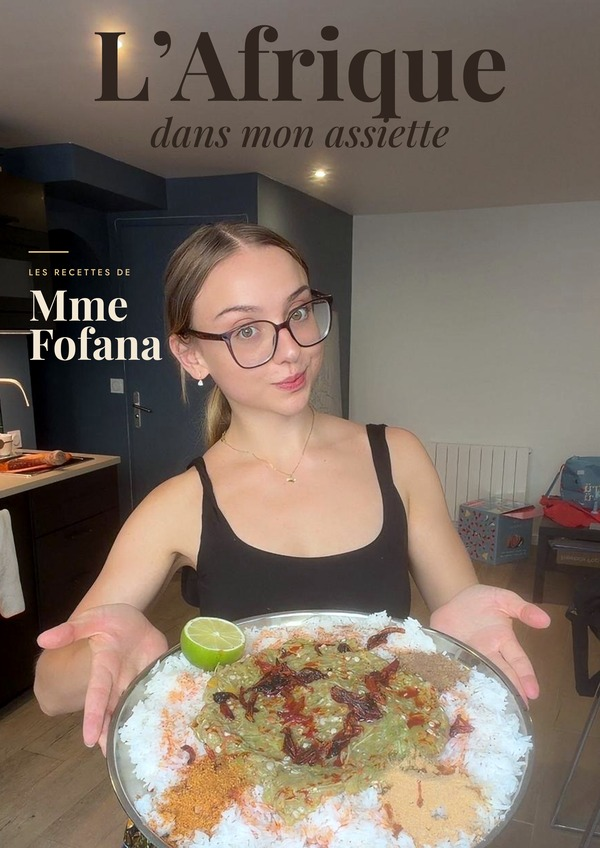
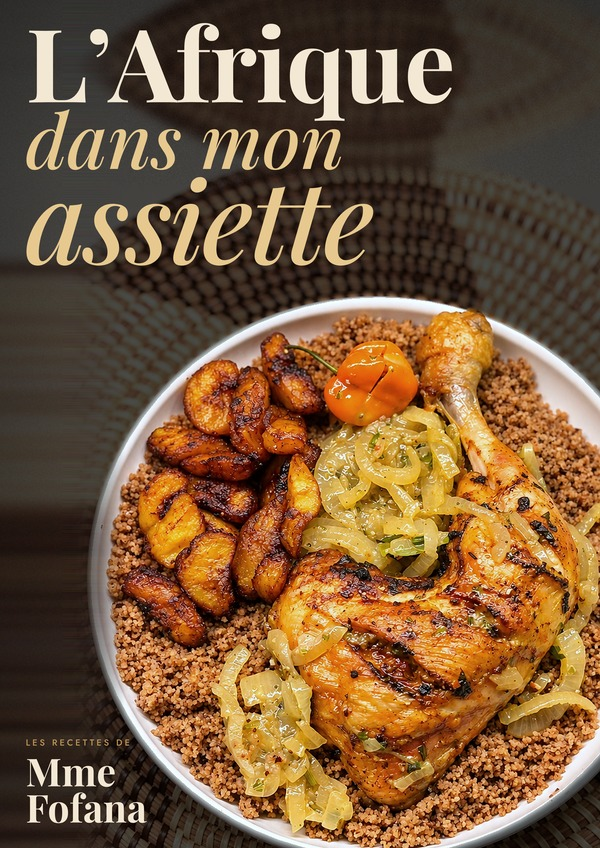

Guide photo — couverture L’Afrique dans mon assiette
À réaliser à la maison, avec un smartphone récent, sans matériel professionnel. Objectif : obtenir les trois photos qui remplaceront les photos provisoires des maquettes A1, A2 et B1.
Bonne nouvelle : un smartphone de 12 mégapixels ou plus suffit pour une couverture A4 imprimée à 300 dpi, à condition d’envoyer le fichier original (jamais par WhatsApp, Messenger ou Instagram, qui le réduisent à environ 1 500 px) et de laisser de l’espace autour du sujet dès la prise de vue.
1. Le matériel (tout est facultatif sauf le téléphone)
Smartphone récent, objectif nettoyé avec un chiffon doux juste avant de commencer.
Un appui stable : petit trépied pour smartphone (20 à 30 €) ou une pile de livres. Pour la vue de dessus (B1), un trépied avec bras horizontal, ou quelqu’un debout sur une chaise stable.
Déclencheur à distance : minuteur 3 s de l’appareil photo, télécommande Bluetooth, ou montre connectée.
Réflecteur : un grand carton blanc, un drap blanc tendu, ou une feuille de polystyrène.
Pour B1 : une surface sombre et mate d’environ 1 × 1,2 m (planche de bois brut foncé, ardoise, tissu teint indigo), le set en vannerie déjà utilisé, et un carton noir.
Du ruban adhésif de peintre pour marquer au sol la place du pied et de la chaise.
2. Réglages du téléphone
iPhone
Android (Samsung, Pixel, Xiaomi…)
Réglages › Appareil photo › Formats : ProRAW / Résolution max (modèles Pro) ou « Haute efficacité » à la plus haute résolution.
Mode Pro ou « Expert RAW » si disponible ; résolution maximale ; format RAW + JPEG si proposé.
Activer la grille (Réglages › Appareil photo › Grille).
Activer la grille 3 × 3.
Objectif 1× ou 2× (jamais 0,5×). Pas de mode Portrait (flou artificiel qui abîme les cheveux et les lunettes).
Objectif principal 1× ou 2× ; désactiver « Optimiseur de scène », « Embellissement », « Amélioration IA ».
Partout : flash éteint, aucun filtre, aucun mode beauté. Appui long sur le visage ou le plat pour verrouiller mise au point et exposition, puis glisser vers le bas pour baisser légèrement l’exposition (environ −0,3 à −0,7) : on préserve les blancs de l’assiette et du riz.
3. La lumière : la règle d’or
Une seule lumière : une grande fenêtre, sur le côté. Éteindre toutes les lampes, LED, guirlandes et bougies (ce sont elles qui ont rendu les photos actuelles trop orange). Lumière du jour indirecte (pas de soleil qui tape) : idéalement entre 10 h et 12 h, ou entre 15 h et 17 h. Le réflecteur blanc se place du côté opposé à la fenêtre pour déboucher les ombres.
4. Les trois photos à réaliser
A1 — chaleureuse et accessible
Lieu : la cuisine, rangée ; garder 2 ou 3 éléments chaleureux flous (plante, planche en bois, pot en terre). Bougies et LED éteintes.
Pose : debout ou assise, le bol de foutou et sa sauce tenu à deux mains devant soi, comme sur la maquette ; regard dans l’objectif, sourire naturel.
Cadrage : vertical. Le haut des cheveux juste au-dessus de la 1ʳᵉ ligne de la grille : le premier quart de l’image doit rester vide (mur, haut de la cuisine), c’est la place du titre. Le bol dans le tiers bas ; il peut être légèrement coupé en bas.
Tenue : haut uni de couleur chaude ou neutre (crème, terracotta, vert). Éviter les motifs près du visage.

A2 — signature gastronomique
Lieu : un coin calme devant un mur clair et uni (ivoire, ocre clair) — indispensable pour que le titre soit lisible. Matières naturelles visibles : table en bois, lin, vannerie, terre cuite.
Tenue : vert forêt ou indigo, uni (c’est la couleur de la marque sur cette version).
Plat : un grand plat généreux (thiéboudienne ou riz sauce feuille) tenu bas, bien en avant ; il peut sortir du cadre en bas.
Cadrage : même règle d’espace au-dessus de la tête ; tête légèrement décalée du centre ; regard caméra, expression plus posée qu’A1.

B1 — la générosité africaine (vue de dessus)
Surface : bois brut foncé, ardoise ou tissu indigo, au sol ou sur une table basse près de la fenêtre. Le set en vannerie peut être posé dessous.
Téléphone parfaitement à plat au-dessus du plat (à 90°), à environ 1,6–1,9 m ; vérifier avec le niveau (iPhone : la croix de la grille devient jaune quand l’appareil est à plat).
Composition : le plat légèrement décalé vers le bas et vers la droite ; le tiers supérieur vide (seulement la surface) pour le titre ; 1 ou 2 petits bols (sauce, piment, citron vert) coupés par les bords ; si possible une main de Mme Fofana qui tient le bord du plat.
Lumière : fenêtre sur le côté, carton noir du côté opposé pour garder du relief.
5. Le plat : 5 minutes qui changent tout
Foutou : le façonner les mains mouillées pour une surface lisse ; le servir chaud (légère vapeur).
Sauce : ajouter une cuillère de sauce chaude juste avant la photo pour la brillance ; essuyer les bords du bol avec un essuie-tout.
Garnitures fraîches au dernier moment (piment entier, herbes, citron vert).
Photographier dans les 3 minutes après le dressage ; refaire si la sauce se fige.
Vraie recette du livre, aucun trucage (pas de colle, pas de glycérine).
6. Vérifier sur place (avant de ranger)
Zoomer à 100 % sur les yeux : ils doivent être nets. Sinon, recommencer avec le minuteur.
Reflets dans les lunettes : incliner très légèrement la tête ou les branches vers le bas.
Rien de parasite : logos, emballages, câbles, linge, cartons.
Faire 30 à 50 photos par scène en variant légèrement l’expression et la distance ; en garder plusieurs.
Faire aussi chaque scène un pas plus loin (plus d’espace autour) : on pourra recadrer, pas inventer ce qui manque.
7. Envoyer les photos
Jamais par WhatsApp, Messenger, Instagram ou SMS : ils compressent et suppriment la qualité. Utiliser AirDrop, un câble USB, Google Drive / iCloud / WeTransfer en « taille originale ». iPhone : Réglages › Photos › Transférer vers Mac ou PC › Conserver les originaux. Ne pas retoucher, ne pas appliquer de filtre ni d’« amélioration » automatique avant l’envoi.